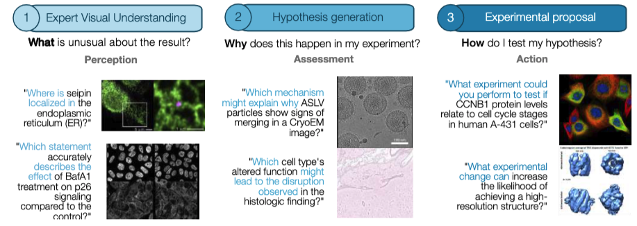
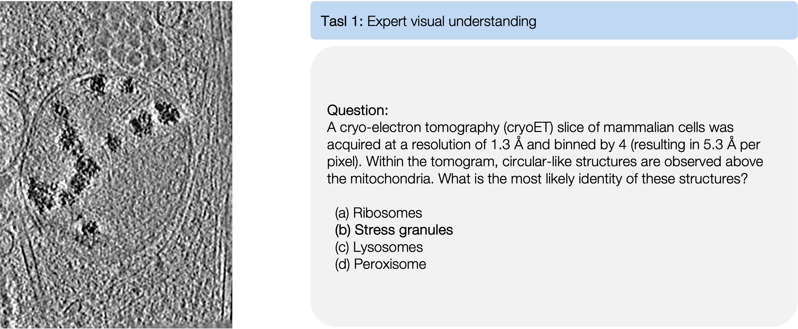
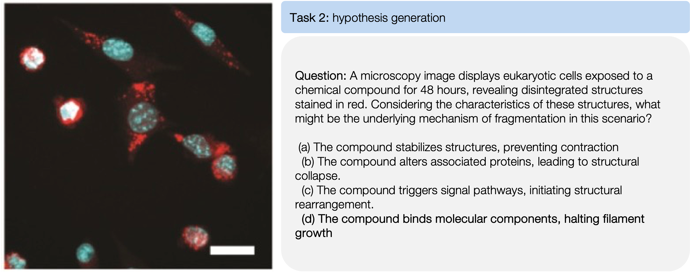
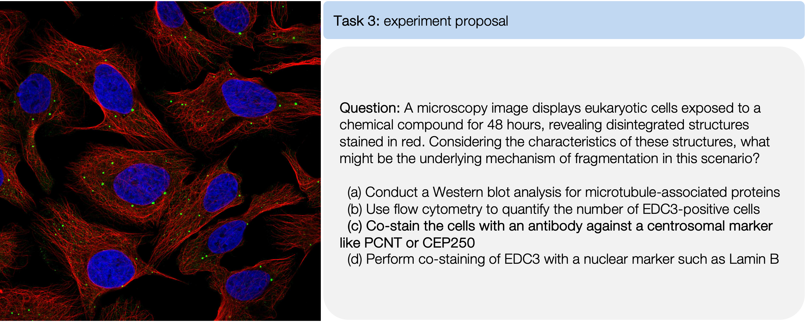
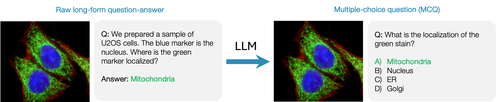
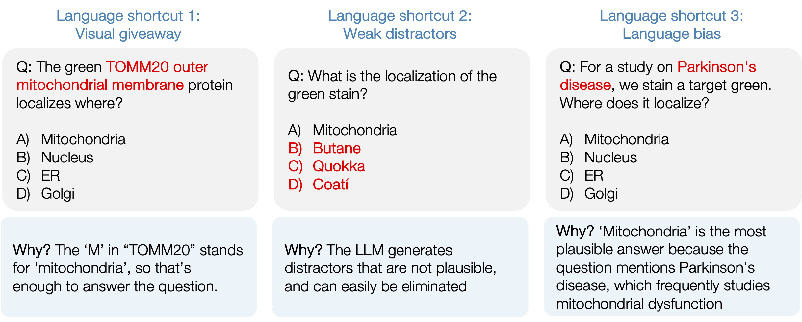
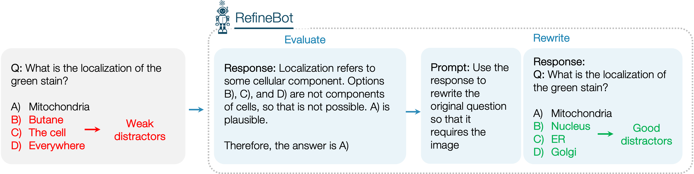
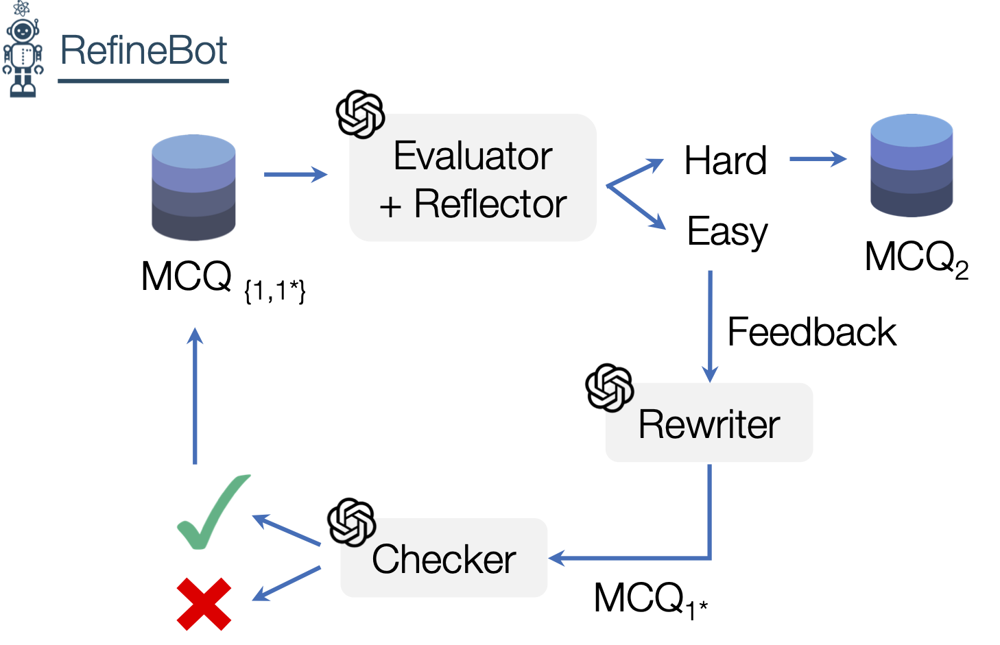
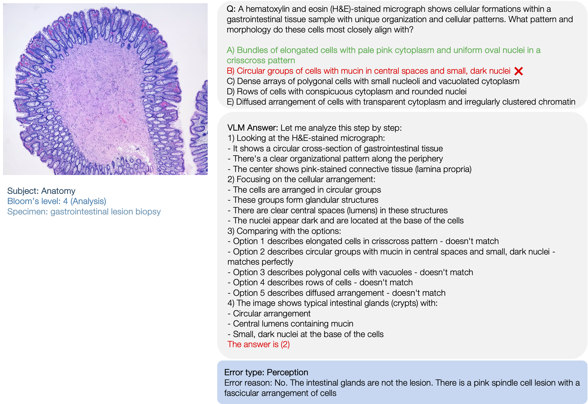
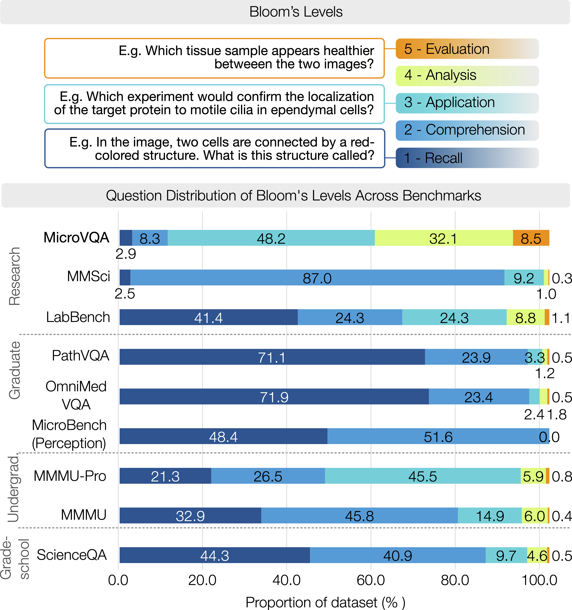

1Stanford University,2Tsinghua University,3University of North Carolina at Chapel Hill,4Princeton University5KTH Royal Institute of Technology6Chan Zuckerberg Biohub Network
Two key themes in AI research are reasoning in large language models (LLMs) and
applying LLMs to scientific research. Our work bridges both by introducing MicroVQA, a benchmark that evaluates LLM reasoning on multiple-choice
questions about microscopy images, created by expert biologists.

Contributions:
Manually created by practicing biologists, these questions reflect tasks where LLMs
could meaningfully assist biological research, and each requires multimodal reasoning.
We also advance the practice of AI benchmarking with our RefineBot method,
which makes multiple-choice questions more challenging by using LLM feedback to remove language shortcuts.
Key Elements of MicroVQA
Useful for real scientific researchers: MicroVQA has 1042 questions from
three tasks that are important to scientific research. The tasks are: expert visual understanding,
hypothesis generation, and experimental proposal.
Difficult reasoning: The questions require domain knowledge and multistep reasoning at the research level of difficulty. Existing vision-language benchmarks for science fall short on one of these dimensions: for example, MMMU-Pro has complex reasoning but at the college-level (from exams), while OmnimedVQA is graduate-level but has less complex reasoning.
High-quality, human-created questions: The questions were created and verified by 11
experts in diverse biological research disciplines. Each question took on average 30mins to write.
Challenging for current LLMs: We tested state-of-the-art MLLMs and specialized medical
models on MicroVQA, with the top model scoring only 52.8% (leaderboard).
Multimodal: There are text-only benchmarks that are both research-level and require difficult reasoning – GPQA and (most of) LAB-Bench. But scientific research is multimodal, so we make questions that need image understanding. To make sure that MicroVQA is vision-centric, we intoroduce the RefineBot method to remove language shortcuts from multiple-choice questions.
Explore the benchmark here:
Building MicroVQA
Why build MicroVQA?
Scientific research involves reasoning about complex data while integrating domain-specific knowledge. A
lot of recent excitement around LLMs comes from the hope that they can augment humans, either as chat
assistants [1, 2, 3, 4] or as agents [1,2,3, 4]. There are some compelling visions for how these systems might look [1,2] but there's now a big need to define concrete tasks that would be useful for real scientists - we need realistic and challenging benchmarks.
Defining the tasks. Step 1 was to define tasks, or categories of
questions to guide benchmark collection. We developed them with 8 collaborators over ~16h of discussions. The tasks are:
Expert visual understanding, which commonly involves anomaly detection or image comparisons. Analysis
must consider the sample preparation context and expert knowledge is needed to evaluate biological
features and technical artifacts.
Hypothesis generation considers the experimental context and tries to find an explanation for
what we see in the image. It requires abductive reasoning, since you need to select from many possible
hypotheses given incomplete information.
Experimental proposal requires deciding on next steps to validate a given hypothesis.
It requires knowledge about experimental protocols and reasoning about whether the experiment would prove
that hypothesis.



RefineBot: Making MCQs That Test Reasoning and Remove Language Shortcuts
When building QA & VQA evaluations, you typically start with a question string and answer string written by a person. Then it's common to use an LLM to transform it into a good multiple-choice question (MCQ), including the wrong answers that are called 'distractors'. Here we'll use a very easy biology question to demonstrate.

We found that this naive approach leads to questions that are very easy for LLMs to solve - GPT-4o could
get 90% of questions correct, even without the image. We were confident that the original questions really do need the
image, so we concluded that the question generation process was introducing language shortcuts, meaning LLMs could
cheat and solve them using test-taking strategies. We identified 3 types of shortcuts:

Shortcut 1 - visual giveaway. The text 'gives away' the image content so it's trivial to answer the
question.
Shortcut 2 - weak distractors. The LLM generates implausible or weak distractors that are easy to eliminate.
Shortcut 3 - language bias. The model can make an educated guess based on the prior learned by the LLM [1].
We created RefineBot to fix this (code here). The key
idea is that if you give the question to the LLM without the image (box 1 below), then the LLM's
chain-of-thought response can show you what language shortcut it used (box 2). Then you can simply prompt
the LLM to rewrite the question in a way that removes the shortcut (boxes 3 and 4).

The final RefineBot system applies this basic idea in a loop, with an extra check that the revised
question matches the original question.

While we designed this to deal with language shortcuts in particular, we think that a similar strategy
could make any multiple-choice question harder.
Testing MLLMs on MicroVQA
We tested MicroVQA on current frontier models:
MicroVQA is too challenging for all existing multimodal LLMs, scoring below 53%.
There is little gap between the top closed- and open-source models.
For a given model family, there is very little difference between the larger model like Qwen2-VL-72B
and its smaller counterpart Qwen2-VL-7B. Note that the smaller models often have the same vision
encoder.
Standard fine-tuning methods for medical fine-tuning (as in Llava-Med compared with LLaVA-Mistral-7B) do improve performance a bit.
The human baseline was 51% - this reflects that biology is very specialized, so even expert humans
will get many questions wrong.
Starred models (*) were used by the RefineBot in MCQ - GPT-4o and Claude-3.5-Sonnet. This could induce
a small bias that makes their final performance relatively worse.
We perform 'no-image' and 'choices-only' ablations in the paper.
What do MLLMs get wrong?
Understanding error modes.
We manually reviewed 30 random samples of errors by Claude-3.5-Sonnet. We spent about 45 minutes per sample to properly understand the failures. Here's some example:

50% were perception errors - failing to interpret the image. Many
responses tend to rely on the 'language bias' towards common image content (that we discuss above).
30% were misconception (knowledge) errors about nuanced
biomedical knowledge.
13% were over-generalization or over-simplification - the model
answers a less-specific and less-nuanced version of the actual question.
7% were hallucinations about the question text added in the
chain-of-thought response.
This suggests that the most important next steps for stronger microscopy MLLMs are: (1) to improve microscopy-specific image
understanding in MLLMs, and (2) to improve knowledge, possibly with some RAG-based methods.
Bloom's Taxonomy to Measure Reasoning Difficulty
MicroVQA's focus on high reasoning levels.
We argued that prior MLLM benchmarks for science tend to emphasize recall and basic comprehension, probably
because they are derived from educational exams and text books. Our goal was to test more challenging scientific
reasoning by recruiting experts to create questions that reflect real research tasks, like analyzing microscopy
images in novel experimental contexts, and evaluating hypotheses.
Bloom's taxonomy.
To quantify this more challenging reasoning, we used the Bloom's taxonomy [1], which classifies cognitive skills into six levels, from basic recall to complex reasoning. While multiple-choice questions (MCQs) cannot assess the highest level — called 'creation' — they effectively test comprehension, application, analysis, and evaluation [1, 2, 3].
We trained an LLM to classify MCQs into Bloom's levels. This lets us compare reasoning levels between different vision-language MCQ benchmarks in science:

Composition of scientific MLLM benchmarks regarding estimated Bloom's taxonomy.
Among research-level benchmarks, MicroVQA has the highest-level reasoning.
The next highest are LAB-Bench at the research level, and MMMU-pro at the college level.
Another finding is that among benchmarks with higher level reasoning, data scale becomes very challenging - harder questions are harder to collect. Specifically, MicroVQA has 1,042 samples, LAB-Bench's vision-language subset has only 181, and MMMU-Pro has 1,730.